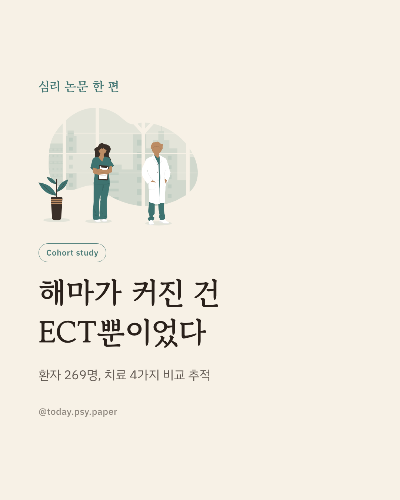
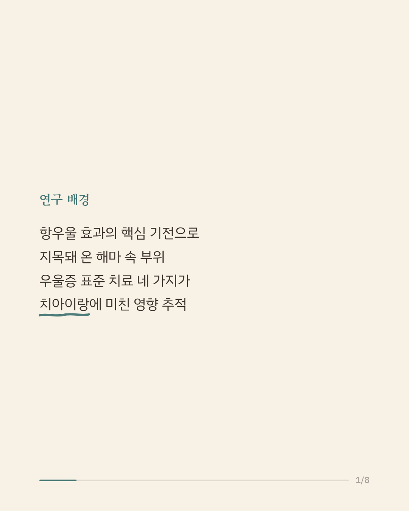
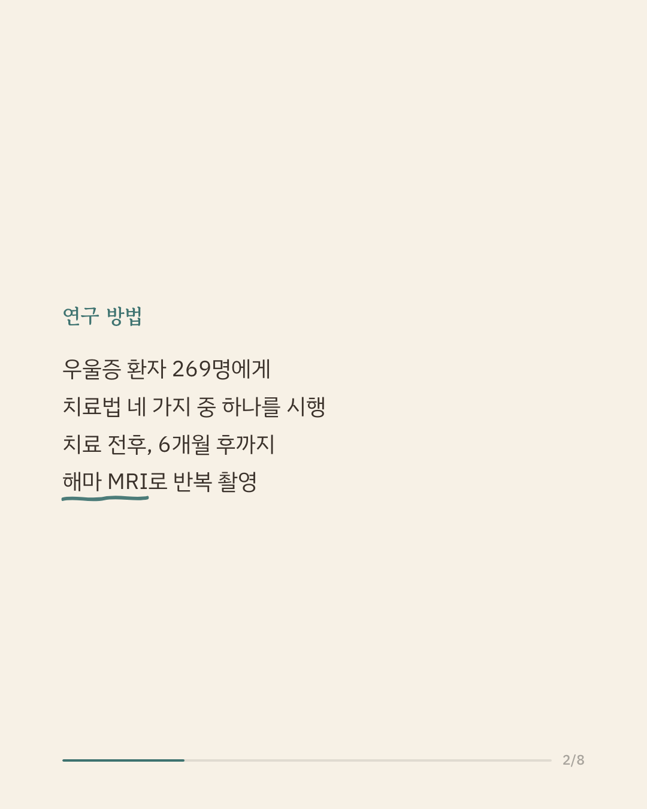
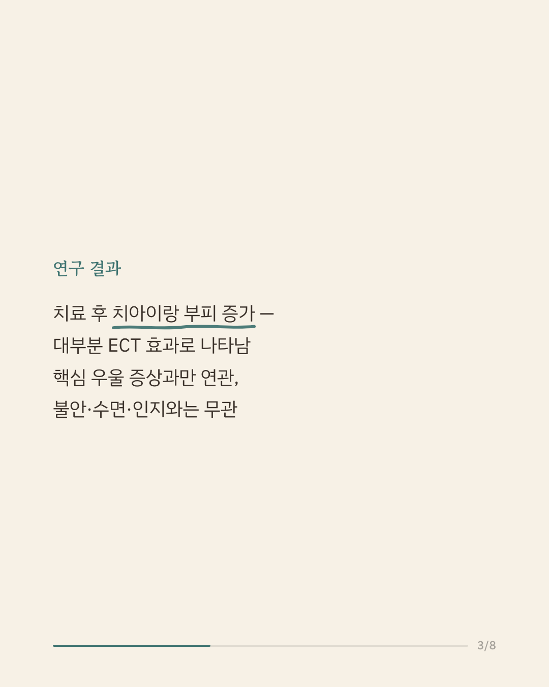
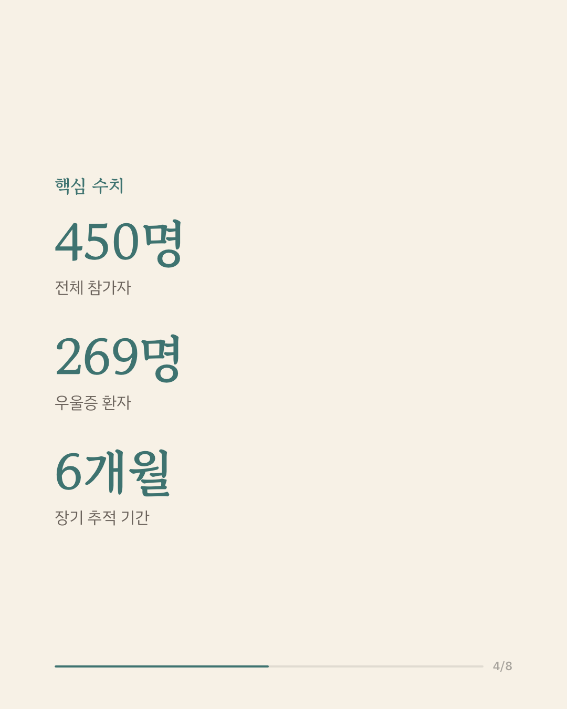
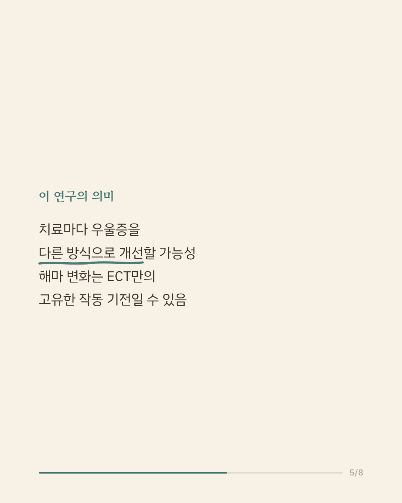
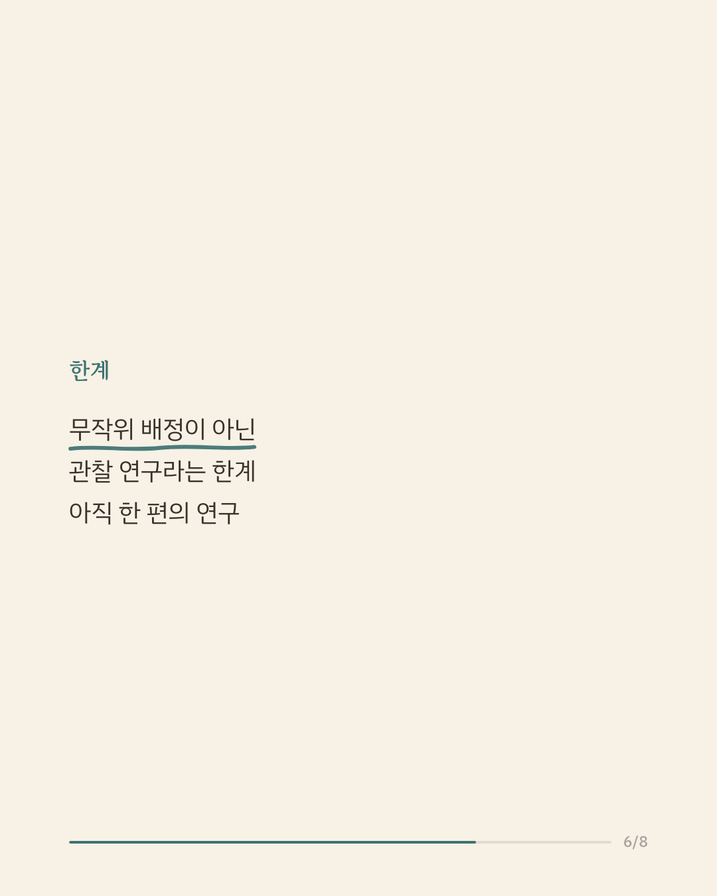
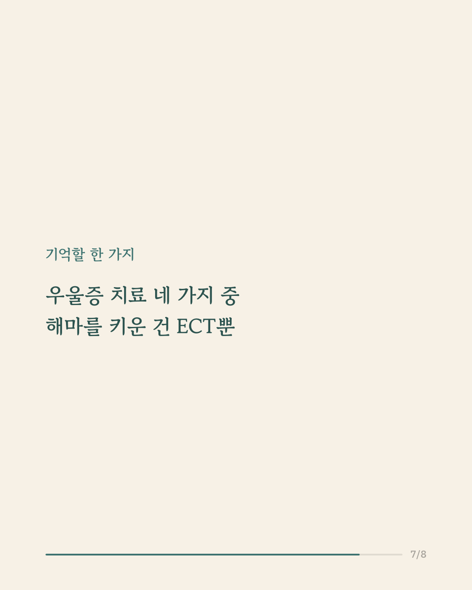
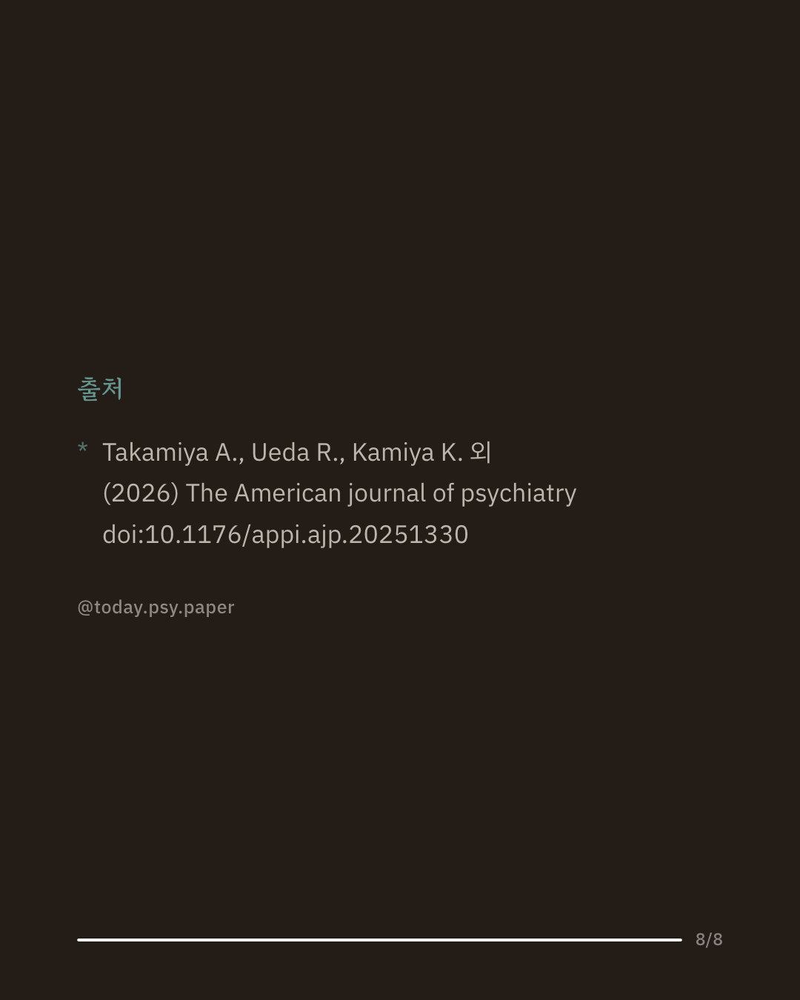

우울증을 치료하면 뇌도 함께 변할까요. 해마 속 '치아이랑'이라는 부위는 항우울 효과의 핵심 기전으로 오랫동안 주목받아 왔습니다. 이 연구는 인지행동치료, 약물치료, rTMS, 전기경련치료(ECT)라는 네 가지 표준 치료를 받은 우울증 환자 269명과 건강한 사람 181명을 대상으로, 치료 전후 그리고 6개월 후까지 해마 MRI를 반복 촬영해 비교했습니다. 전체적으로 치료 후 치아이랑 부피가 늘었지만, 이는 주로 ECT를 받은 집단에서 뚜렷하게 나타난 변화였습니다. 또한 부피 변화는 핵심 우울 증상의 호전과만 관련이 있었고, 불안·신체 증상·불면이나 인지 기능과는 관련이 없었습니다. 이는 같은 진단이라도 치료법에 따라 뇌가 반응하는 방식이 다를 수 있으며, 해마 변화가 모든 치료에 공통된 기전이 아니라 ECT 특유의 작동 방식일 가능성을 시사합니다. 다만 무작위 배정이 아닌 관찰 연구였다는 한계가 있어, 단일 연구이므로 확대 해석은 조심해야 합니다. 출처: The American Journal of Psychiatry (2026), 'Hippocampal Dentate Gyrus Plasticity and Its Association With Dimensional Clinical Improvement Across Four Depression Treatment Interventions' #임상심리 #정신건강정보 #우울증치료 #신경과학 #심리학연구
python3 publish.py 42642807